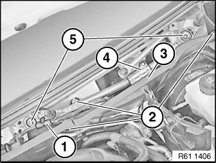

Wiper Motor: Service and Repair
61 61 270 Removing And Installing Or Replacing Bracket For Windscreen Wiper System Complete With Motor

Necessary preliminary tasks:
- Remove cowl panel cover
- Remove both tension struts from spring strut dome

Release screws (2) from left heater bulkhead (3).
Remove left heater bulkhead (3) towards top.
Unclip cable (1) for wiper motor from holder.
Release screws (5) for wiper bracket (4).
Tightening torque 61 61 6AZ.
Remove wiper bracket (4) upwards.
Disconnect plug for wiper motor.

Installation:
Before fitting the wiper arms, allow the windscreen wiper motor to run into the rest position.
To ensure that the windscreen wiper system functions properly, check/adjust the contact angle of the wiper arms to the windscreen.
��;&: